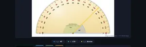
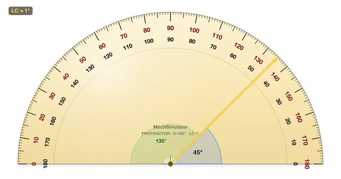

Online Protractor Simulator
Interactive virtual protractor — 0–180° and 360° modes · LC = 1°
1 Overview
This protractor simulator is a free online tool for practising how to read a protractor and measure angles from 0° to 180° with a 1° least count. The protractor is a fundamental instrument in technical drawing, sheet metal work, carpentry, and general fabrication. This simulator is built for engineering students, engineering trainees, and vocational learners who need to demonstrate accurate angle measurement skills. It includes an interactive rotating arm, dual-scale display (inner and outer), angle classification, and both practice exercises and a timed quiz.
2 Setting the Zero

The simulator loads in Simulate mode with the arm set to 0°. To begin:
- Drag the rotating arm clockwise or anti-clockwise to set any angle. You can also use the left/right arrow keys for 1° increments.
- The info row shows three values: ANGLE (inner scale), ALT (outer scale = 180° − angle), and TYPE (angle classification).
- The formula panel displays the reading breakdown and identifies the angle as acute, right, obtuse, or straight.
- Use the Zoom button to magnify the degree scale for easier reading.
3 Taking a Reading
In Simulate mode the arm rotates freely from 0° to 180°. As you move it, the digital readout and info cells update in real time. The simulator displays both the inner scale (reading left to right, 0°–180°) and the outer scale (reading right to left, 180°–0°). This dual-scale display mirrors a real semicircular protractor and helps you understand which scale to use depending on the baseline alignment. The angle type indicator classifies your reading as acute (less than 90°), right angle (exactly 90°), obtuse (between 90° and 180°), or straight (180°).
4 How the Scale Works
Explore mode provides categorised reference cards covering angle measurement theory, angle types and relationships, different protractor instruments, and common measurement errors. Browse the tabs — Basics, Angle Types, Instruments, and Errors — to deepen your understanding. Each card includes key facts, formulas, and practical tips for workshop use.
5 Practice Readings
Practice mode: The arm is set to a random angle and locked in place. Read the protractor and type the angle in degrees into the input box. Click Check for instant feedback. Click New for another random angle. Your score is tracked.
Quiz mode: A timed series of 5 angle-reading questions. After completing all questions, a results panel shows your score, star rating, and a per-question breakdown. Use quiz mode to test your speed and accuracy under exam-like conditions.
6 Angle Classification
This simulator reinforces angle theory alongside measurement practice:
- Acute angle: Greater than 0° but less than 90°.
- Right angle: Exactly 90° — indicated by a square corner symbol in technical drawings.
- Obtuse angle: Greater than 90° but less than 180°.
- Straight angle: Exactly 180° — a straight line.
Understanding supplementary angles (two angles summing to 180°) and complementary angles (two angles summing to 90°) is essential for sheet metal bending and technical drawing tasks.
7 Advanced Features
- 360° mode — switch from a 180° semicircle to a full-circle protractor for measuring reflex angles (180°–360°), used in navigation and surveying.
- Two arms — both the baseline arm and the measuring arm become independently draggable, just like measuring a drawn angle in a workshop — click and drag either arm.
- Snap to common — the arm snaps to standard workshop angles (0°, 15°, 30°, 45°, 60°, 75°, 90° … 180°). Helpful for learning standard angle landmarks.
- Dual arc — the supplementary angle (ALT = 180° − angle) is shown as a green dashed sector, reinforcing the inner-vs-outer-scale relationship.
- Zero error — simulate an instrument with mis-aligned zero (−5° to +5°). The reading panel shows both the scale reading and the corrected true value, training learners to apply zero-error correction.
- PNG export — download the current view (with watermark) for inclusion in worksheets or lab reports.
- Real-world Scenarios (Practice) — angles from real engineering: chamfers, drill point angles, roof pitches, staircase rises, hexagonal nuts, sheet-metal bends, V-blocks.
- Construct Quiz mode — instead of reading the protractor, you are given a target angle and must drag the arm to match it within 1.5°. Tests the opposite skill: laying out angles for fabrication.
- Keyboard precision — arrows = 1°, Shift + arrows = 5°, PageUp/PageDown = 10°, Home = 0°, End = 180°.
8 Tips & Best Practices
- Always align the baseline (0° line) with one arm of the angle before reading — misalignment is the most common source of error.
- Confirm whether you are reading the inner or outer scale — choosing the wrong scale gives a supplementary angle instead of the correct one.
- For precision better than 1°, use a bevel protractor with a vernier scale that reads to 5 arcminutes (5').
- Practice both clockwise and anti-clockwise angle readings to build flexibility for different drawing orientations.
How to Use a Protractor — Online Angle Measurement Practice

A protractor is an instrument used to measure and lay out angles in engineering drawing, sheet metal work, carpentry, and general fabrication. This free online protractor works exactly like the plastic one from a geometry set: drag the arm, read the scale where it crosses. It covers 0°–180° as a semicircle and switches to a full 0°–360° dial with one click, both at a 1° least count. Nothing to install and nothing to sign up for — it is a virtual protractor you can use straight from the browser, on a laptop, tablet or phone.
A workshop habit worth forming early: before the needle of any measuring instrument touches the scale, decide which scale you are going to read. With a protractor the two opposed scales catch out almost every first-year student exactly once. Saying "I'm reading the outer scale because my baseline points right" out loud, once, fixes the habit. The simulator's classify-as-you-go feedback exists to reinforce that mental check on every measurement.
How to Read a Protractor — Step by Step
Step 1: Place the centre point of the protractor at the vertex of the angle. Step 2: Align the baseline (0° line) with one arm of the angle. Step 3: Read the scale where the second arm crosses the protractor. Check whether you need the inner or outer scale — the simulator shows both.
Protractor Types Compared
| Type | Range | Least Count | Best For |
|---|---|---|---|
| Semicircular Protractor | 0°–180° | 1° | General drawing, classroom, layout |
| Full-Circle Protractor | 0°–360° | 1° | Reflex angles, surveying, navigation |
| Bevel Protractor (Vernier) | 0°–360° | 5′ (5 arcmin) | Precision machining, inspection |
| Digital Protractor | 0°–360° | 0.1° | Field work, inclinometer use |
360° Mode — Measuring Reflex Angles
A classroom protractor stops at 180°, which is why so many students get stuck the first time they are asked to measure a reflex angle (anything between 180° and 360°). Press ◯ 360° mode in the options bar and the semicircle becomes a full circular dial, graduated all the way round — the same thing a surveyor's or navigator's full-circle protractor gives you.
With the 360 protractor online you have two ways to handle a reflex angle:
- Read it directly. In 360° mode the dial carries one continuous scale right round the circle, numbered every 10°, so a reflex angle is a number you read off with no arithmetic.
- Measure the small angle and subtract. Measure the non-reflex angle on the 0°–180° scale and take it from 360°. A 215° reflex angle shows as 145° the other way round: 360 − 145 = 215.
Turning on Two arms alongside 360° mode lets you drag both the baseline and the measuring arm, so you can measure the angle between any two directions rather than always starting from horizontal — useful for bearings, bolt-circle spacing and any layout where neither line is level.
Inner Scale vs Outer Scale
A semicircular protractor has two scales reading in opposite directions. The inner scale reads left-to-right (0°–180°); the outer scale reads right-to-left (180°–0°). Always confirm which scale aligns with your baseline before reading the measurement.
Angle Classification
This online protractor classifies each reading as you take it: Acute (0°–90°), Right angle (90°), Obtuse (90°–180°), Straight angle (180°), Reflex (180°–360°, in 360° mode) and Full rotation (360°) — reinforcing angle classification alongside measurement practice.
Worked Example — Setting Out a Roof Truss Angle
A symmetrical king-post roof truss has a span of 6.0 m and a rise (vertical from tie-beam to apex) of 1.5 m. What is the pitch angle of each rafter measured from horizontal, and how do you set it out with a protractor?
Half the span is 3.0 m, so the rafter triangle has opposite side 1.5 m and adjacent side 3.0 m. Pitch angle θ = arctan(1.5 / 3.0) = arctan(0.5) = 26.57°. To set this on the drawing or template, place the protractor centre on the rafter foot, align the 0° baseline with the tie-beam line, then mark the point on the dial at 26.5° (the 1° least count rounds 26.57 to the nearest mark). Draw the rafter line from the centre through that mark. Repeat from the opposite side and the two rafter lines should intersect over the centre line — a quick check that catches measurement errors before any timber is cut.
Five Common Mistakes Students Make
- Centre point off the vertex. Even a 1 mm offset between the protractor centre and the angle vertex distorts every reading. Use a sharp pencil cross at the vertex, not the corner of an eraser.
- Reading the wrong scale. The inner and outer scales add to 180° at every mark. If your reading does not match the apparent angle visually, the answer is almost certainly on the other scale.
- Baseline not flush with the ray. A small gap between the protractor's 0° line and the angle's arm rotates the entire measurement. Check both ends of the baseline are touching before reading.
- Confusing the angle with its supplement. If a quoted angle is greater than 180° (a reflex angle), measure the smaller angle on the other side and subtract from 360°. A semicircular protractor cannot read reflex angles directly.
- Forgetting parallax. Looking at the dial from an angle — especially on cheap plastic protractors with thick scale rings — shifts the reading by up to a full degree. Position your eye perpendicular to the scale.
Where Angle Measurement Matters in Engineering
Protractor work runs through every stage of design and fabrication. Drafting offices use it for orthographic and isometric layouts. Sheet-metal shops use it to lay out cones, transitions and bend lines on flat patterns. Carpenters set out roof pitches, stair stringers and mitre joints. Surveyors take rough bearings with a Brunton compass — effectively a protractor with a sighting needle. In metrology, the inspection bevel protractor (with vernier scale) measures machined angles to 5 arc-minutes; for higher precision, an optical sine bar or a coordinate measuring machine takes over. The arithmetic stays the same; only the resolution changes.
Standards and References
For deeper study: BS 8888 (Technical product specification), ASME Y14.5 (Dimensioning and tolerancing), ISO 129-1 (Indication of dimensions and tolerances). Workshop technology textbooks — Hajra Choudhury's Workshop Technology, Raghuwanshi's Workshop Technology, Galyer & Shotbolt's Metrology for Engineers — carry chapters on angle measurement, sine bars, and bevel-protractor verniers worth reading alongside this simulator.
Who Uses This Simulator?
Ideal for technical drawing students, sheet metal apprentices, carpentry trainees, and students in engineering diploma or engineering education programmes who need to demonstrate accurate angle measurement in practical assessments.
Explore Related Simulators
If you found this Protractor simulator helpful, explore our Bevel Protractor simulator, Steel Ruler simulator, and Vernier Caliper simulator for more hands-on practice.
3D Model — Online Protractor Simulator
Interactive 3D model of this apparatus. Pick a component on the right, then drag to rotate · scroll to zoom · right-drag to pan.